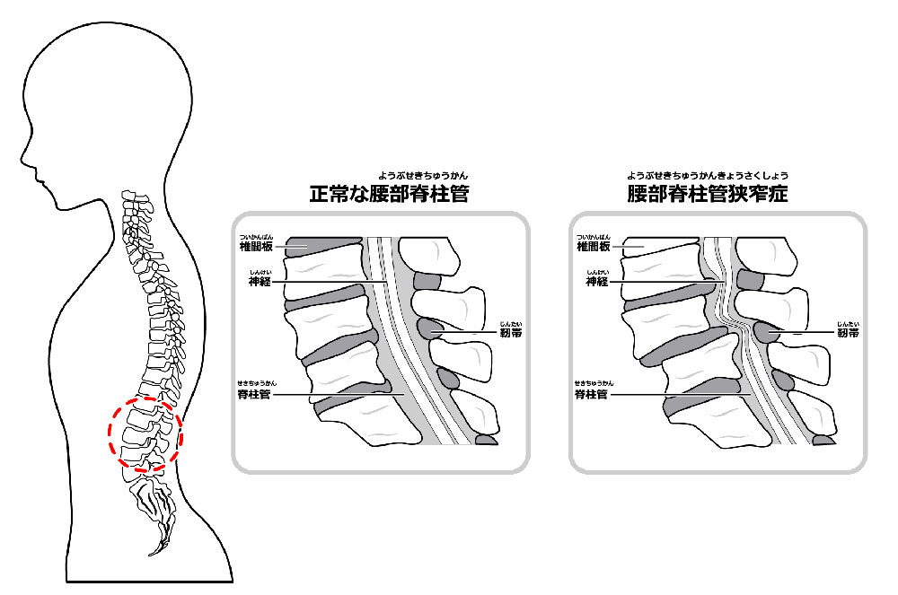
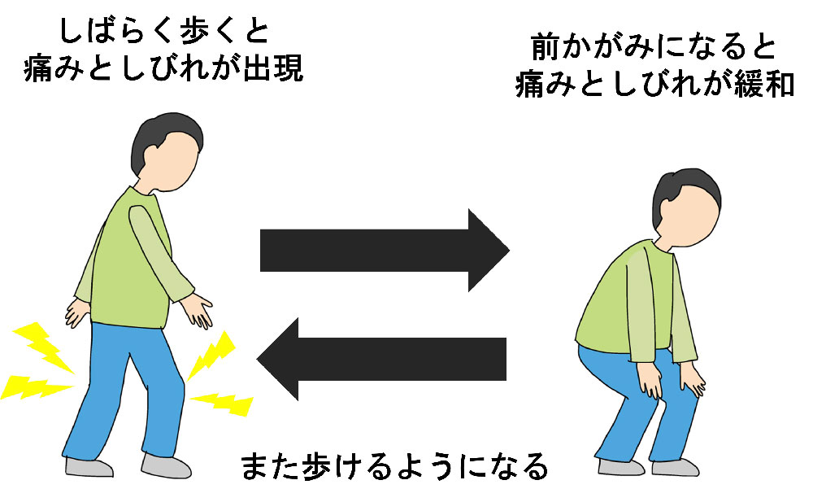

腰部脊柱管狭窄症
腰部脊柱管狭窄症とは
腰部脊柱管狭窄症とは、脳から足に向かう神経（脊髄）が通る背骨の中の空間（脊柱管）が何らかの原因で狭くなり、神経が圧迫されることで、腰から足にかけての痛み、しびれ、筋力低下（特に歩行時の症状）を引き起こす病気です。

症状
腰部脊柱管狭窄症の代表的な症状は、お尻や足の痛みとしびれです。
この痛みや痺れは、立ったり歩いたりすると強くなり、座ったり前かがみになると治る、という特徴があり、これを「間欠性跛行（かんけつせいはこう）」と呼びます。

脊柱管の狭窄が重症の場合は、安静にしていても足の痛みやしびれが生じ、さらに排尿や排便の障害（尿が出にくい、残尿感が強い、便が漏れるなど）が出ることもあります。
原因
腰部脊柱管狭窄症の明らかな原因は、よくわかっていません。
50歳代以降に多くなってくる病気であり、加齢の影響は間違いなくあると言われています。
また、激しい労働や背骨の病気の影響で起こることもあります。
診断
腰部脊柱管狭窄症は、問診による特徴的な症状と、診察によってある程度診断が付けられます。
画像診断としては、レントゲン写真のほか、MRI検査が有用です。
何らかの事情でMRI検査ができない場合、また特徴的な症状があるのにMRI検査で診断がつかない場合は、脊髄造影検査、脊髄造影後CT検査を行うことがあります。
治療
腰部脊柱管狭窄症の主な治療は、保存療法と手術治療です。
保存療法には、薬物治療やリハビリテーションなどがあります。
薬物療法には神経を保護する薬や炎症を抑える薬、痛み止めなどを用います。
また、腰を伸ばすと症状が悪くなるので、歩く時には杖や手押し車などを用いると良いでしょう。
自転車も症状が出にくい乗り物です。
腰部脊柱管狭窄症のうち、軽症および中等症の場合は半数近くの方は、自然に症状が良くなると言われています。
安静時に症状がある重症の場合、また排尿や排便に障害がある場合、そして保存療法で症状が改善せず、患者さんの希望がある場合は手術治療が選択されます。
手術は、狭くなった脊柱管を拡げる除圧術と、椎体を固定し症状を出にくくする固定術があります。
参考文献
https://www.joa.or.jp/public/sick/condition/lumbar_spinal_stenosis.html
https://www.jnj.co.jp/jjmkk/general/spinalstenosis http://www.neurospine.jp/original28.html
https://www.carenet.com/news/general/carenet/52837 https://clinicalsup.jp/jpoc/ContentPage.aspx?DiseaseID=1959#TOP